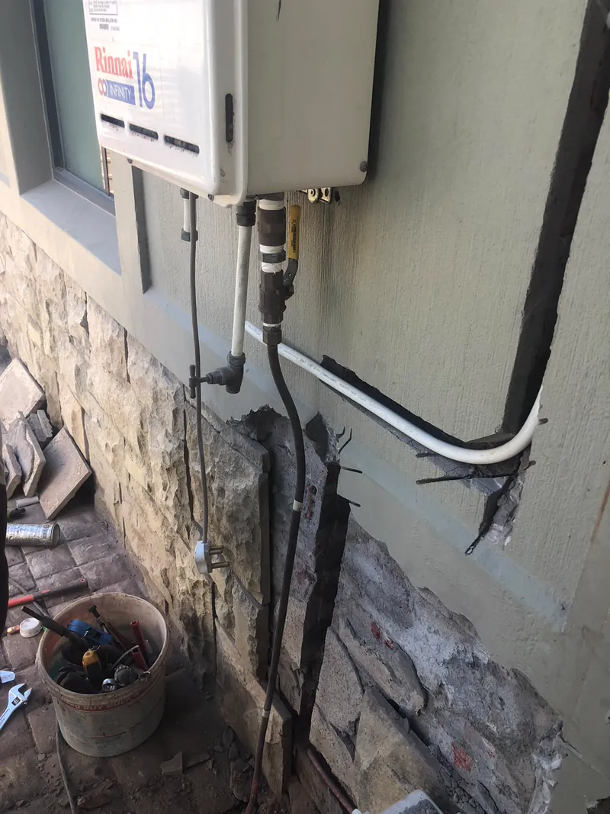
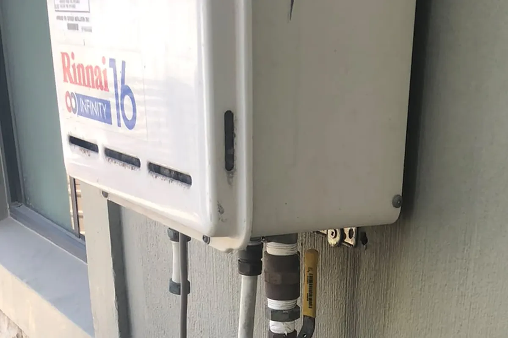

Gas geyser repairs and servicing in Cape Town.
No hot water, a flame that will not hold, or water running cold halfway through a shower. We diagnose the fault on site, tell you whether it is the geyser or the cylinder, and quote the repair before starting.
- Registered with
- SAQCC Gas
- Repaired to
- SANS 10087
- Callout and diagnosis
- R750
- Any brand
- We repair it
The kit that comes out on every repair callout. Nothing gets replaced until the fault is confirmed.
What a gas geyser repair involves.
Checking the gas supply and cylinder first, since low pressure from a near-empty bottle mimics half the faults we get called out for. Then the burner and ignition assembly, the gas and water connections, the flue, and the water pressure feeding the unit. Once the fault is confirmed we quote the part or the fix before touching anything, so you approve the cost before we proceed. A like-for-like repair is usually done in one visit.

From the fault you send us to a working geyser, usually one visit.
Most repairs are diagnosed and fixed on the same callout. Nothing gets signed off until the geyser runs a clean blue flame and holds water temperature.
Send the fault
WhatsApp the symptom, your suburb and the appliance brand if you know it. We confirm a callout time.
Diagnose on site
Cylinder and gas supply checked first, then the burner, ignition, connections and flue, before anything is assumed broken.
Quote, then repair
Parts and labour are quoted once the fault is confirmed. You approve it before we touch anything further.
Test and hand back
The burner is checked for a clean blue flame and the water temperature is confirmed before we leave. A new COC only if the repair changed the installation.
Why Cape Town homes call Red Flame for a repair.
We are a gas shop first. The repair is often how a customer meets us, and the refills are why they stay.
Diagnosis before parts
We check the cylinder and gas supply before assuming a part inside the geyser has failed. It's the cheaper fault more often than not.
Any brand, any installer
We repair and service gas geysers regardless of who installed them, not only the units we fitted ourselves.
We supply the gas side
If the fix is a bigger cylinder or a second one on auto-changeover, we can arrange it from the same Woodstock shop as the callout.
Refills afterwards
Once the geyser is running again we deliver refills free across our Cape Town area, on your schedule.
Repair it, or replace it.
Most faults are a straightforward part repair. Age and parts availability are what usually tip a job toward replacement instead.
When a repair is the right call
A single failed part, an ignition fault, a blocked pilot or a worn valve on a unit that's otherwise sound. If the brand's parts are in stock, most of these are fixed on the callout.
When replacement makes more sense
An older unit on its second or third repair, a brand whose parts are hard to source, or a fault where the repair cost starts to approach the price of a new geyser. We'll tell you honestly if that's where a job is heading, before you pay for parts on a unit that's on its way out anyway.
Repairs and your Certificate of Compliance.
Replacing a pilot assembly, a valve or another failed part like-for-like is a repair, not a change to the gas installation, so it usually doesn't require a new Certificate of Compliance. What does require recertifying is anything that changes the installation itself: a new regulator, altered piping, or a relocated cylinder. We tell you on the callout which side of that line your repair falls on, and can issue a new COC on the same visit if it's needed.
This is also where an older installation sometimes gets found. A repair callout is a common moment to spot a hose past its date code or a cylinder set up without outside venting, and we'll flag it even where it isn't the reason we were called.

What a gas geyser repair costs.
| Service | From (ZAR) | Not Included |
|---|---|---|
| Callout & fault diagnosis (incl. labour) | R750 | Parts and remedial repair, quoted separately |
| Annual service | R750 | Parts, if a fault is found during the service |
| Remedial repair / parts | Quoted on site | Not applicable |
| New COC (if repair affects the installation) | R950 | Not applicable |
Starting prices. Parts and the repair itself are quoted on site once the fault is diagnosed, so you approve the cost before we proceed.
What moves the price.
- What's actually wrong. A like-for-like part swap costs less than a fault that changes the installation.
- Parts availability. Some brands hold parts locally, others need to be sourced, which affects turnaround and cost.
- Access to the unit. A ground-floor external geyser is quicker to reach than one boxed in behind other work.
- Whether the installation needs bringing up to standard. An old hose past its date code or a missing drip leg gets fixed and quoted alongside the original fault.
- Age of the unit. An older geyser on repeat callouts may cost less to replace than to keep repairing.
- Whether a new COC is required. Only where the repair alters the installation itself, not on a like-for-like part swap.
Gas geyser brands we repair and service.
We repair and service standard LPG gas geysers regardless of who installed them or where the unit was bought. These are the three brands we see most often in Cape Town homes.
A geyser we recommissioned in Cape Town.
Our own work, not a stock photo. Back in service and checked for a clean blue flame before we signed off.

Gas geyser repair questions Cape Town customers ask.
Why is my gas geyser not igniting?
How much does a gas geyser repair cost in Cape Town?
How often should a gas geyser be serviced?
Do I need a new COC after a geyser repair?
Can you repair a geyser you did not install?
Gas geyser repairs across Cape Town.
We repair and service from our Woodstock shop at 170 Victoria Road. These are the areas we cover most, and each page carries the gas delivery and installation detail for that suburb.
Gas geyser not working?
WhatsApp the symptom, your suburb and the appliance brand if you know it. We confirm a callout time.